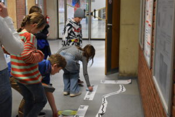
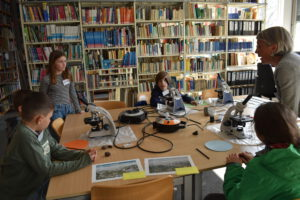

Die KölnerKinderUniversität (KKU) hat es sich zum Ziel gemacht Kindern der 3. bis 6. Klasse greifbar zu machen, was Wissenschaftler*innen eigentlich so an der Uni machen.
Während der KKU können die Kinder, Vorlesungen und Workshops aus allen der sechs Fakultäten der Universität besuchen und so sogar eine KinderUni-Bachelor-Urkunde erhalten. Auch HESCOR als besonderes und großes multidisziplinäres Forschungsprojekt hat dieses Jahr bei der KinderUni den Vorhang gelüftet.
Der Klimawandel betrifft uns alle – auch die Menschen in der Vergangenheit mussten auf das Klima reagieren! Wissenschaftler*innen aller Fachrichtungen interessieren sich dafür, was der Klimawandel für die Menschen und Kulturen bedeutet und bedeutet hat. Aber wie können wir uns das Fachwissen der verschiedenen Wissenschaftler*innen zunutze machen? Welche Wissenschaftler*innen sind die richtigen Gesprächspartner? Idealerweise spricht man mit allen! Genau darum ging es beim HESCOR-Workshop: Studierende und Wissenschaftler*innen blickten hinter die Kulissen eines neuen interdisziplinären Großprojekts an der Universität zu Köln (HESCOR). In diesem Projekt arbeiten Mathematiker, Archäologen, Klimaforscher, Linguisten und Kulturwissenschaftler gemeinsam an der Lösung zu Fragen der Klima- und Kulturforschung und gründen so einen neuen Wissenschaftszweig. Mit Hilfe eines Rollenspiels lernten die Schülerinnen und Schüler, wie trotz großer Unterschiede gemeinsam geforscht werden kann und welche Fragen die Wissenschaftler*innen wirklich herausfordern.

Bei Dr. Elena Robakiewicz konnten die Kinder in die Rolle von Geochronolog*innen schlüpfen und das Alter der Erde genauer untersuchen. Hierzu fassten sie eine Vielzahl vorhandener Daten zusammen und sortierten sie in Form eines Puzzles. So konnten die Kalt- und Warmperioden der letzten 150.000 Jahre einem Klimazeitstrahl zugeordnet werden. Um das Alter alter Funde bestimmen zu können, ist eine Datierung notwendig. Die Kinder lernten hierfür auch verschiedene Arten der Datierung kennen.
Zu Archäologie-Expert*innen wurden die Kinder bei Dr. Isabell Schmidt (und ihrer Tochter Ylva), indem sie lernten, dass man anhand von Tierknochen und Artefakten das Alter eines Fundplatzes bestimmen kann. Mithilfe von archäologischen Entdeckerkisten entwickelten die Kinder ein Verständnis für die Unterschiede im Artefaktspektrum und in der Tierwelt von der Steinzeit bis zum Römischen Reich. Zum Schluss ordneten sie mithilfe des neu gewonnenen Wissens die verschiedenen zeitlichen Epochen in einer Stratigraphie chronologisch.

Bei Dr. Foerster-Indenhuck beschäftigte sich die Gruppe mit Fragen von Klimaforscher*innen. Mithilfe von Mikroskopen lernten die Kinder, wie man Pollen untersucht. Anschließend bestimmten sie die jeweilige Pflanzenart und lernten, wie man mithilfe dieser Informationen Rückschlüsse auf das Klima zieht, in dem die Pflanze vor einer gewissen Zeit gewachsen ist.
Nach erfolgreicher Gruppenarbeit folgte der Austausch der Junior-Wissenschaftler*innen. Dabei zeigte sich, dass auch für die Kinder die Kommunikation und Zusammenarbeit über die Fachgrenzen hinweg schwieriger war als zunächst gedacht.
Zum Schluss konnten die Kinder jedoch das Fazit ziehen: „Miteinander reden hilft!“
The KölnerKinderUniversität (KKU, Cologne Children‘s University) strives to give children from 3rd to 6th grade a hands-on experience of what scientists actually do at universities.
At KKU, children can attend lectures and workshops from all six faculties of the university, receiving a KinderUni Bachelor certificate if enough courses are completed. HESCOR, our large multidisciplinary research project, also joined KinderUni this year.
Climate change affects all of us – even people in the past! Scientists across all disciplines are interested in what climate change means and has meant for humans and cultures. But how do we take advantage of different scientists‘ expertise? Which scientists are the right people to talk to? Ideally all of them! This is exactly what the HESCOR workshop was about: students and scientists looking behind the scenes of a new large-scale interdisciplinary project at the University of Cologne (HESCOR). In this project, mathematicians, archaeologists, climate researchers, linguists, and cultural scientists work together to solve climate/culture research questions, ultimately establishing a new branch of science. With the help of a role-playing game, students learned how research can be carried out together despite major differences and which questions the scientists are really challenged with.
With Dr. Elena Robakiewicz, students studied the age of the earth more closely. To do this, they learned about Marine Isotope Stages and sorted its foraminifera data our as a puzzle. From these data, students could recognize the cold and warm periods of the last 150,000 years. Our geochronology experts were then able to help their other colleagues based off of their knowledge from absolute dating techniques with determining the ages of archaeological and climatological material.
Students became archaeology experts with Dr. Isabell Schmidt (and her daughter Ylva) by learning about different eras through layered stratigraphic zones. The students used the basic knowledge to study animal bones and artifacts through time. With the help of archaeological discovery boxes, the students learned about different cultures through a range of artifacts and animals from the Stone Age to the Roman Empire.
At Dr. Foerster-Indenhuck’s climate station, the group dealt with questions from climate researchers. With the help of microscopes, the children learned how to examine pollen. They identified the plant species that could tell them information about the environment where the plant grew a certain time ago.
The successful group work was followed by an exchange between the junior scientists to bring their data together. It turned out that communication and collaboration across disciplines was more difficult than the students initially thought as they needed to learn from one anothers‘ expertise.
In the end, our students concluded: „Talking with each other helps!“